Editorial Product Experience / V3 Left: supplied design reference. Right: actual Astro implementation in Chromium. All 24 pairs use matching viewport dimensions. Open an image for original resolution. Full-page captures retain protected content and real controls beyond the shorter specimen. Code and browser evidence are ready for owner review; visual approval and production deployment are separate gates.
Home Platform Workflows Knowledge Insights Technology Experience Compare About Journal Guides Contact Interaction evidence Home / desktop — reference / browser (1440 × 1040 each) 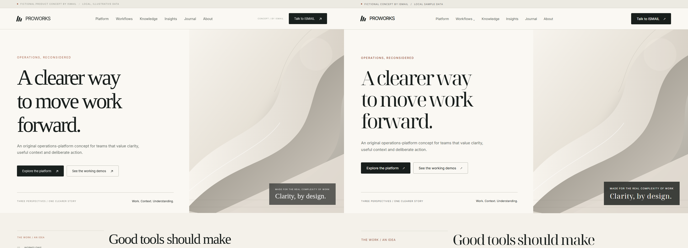
Full-page reference and actual browser (4343px high) mobile — reference / browser (390 × 900 each) 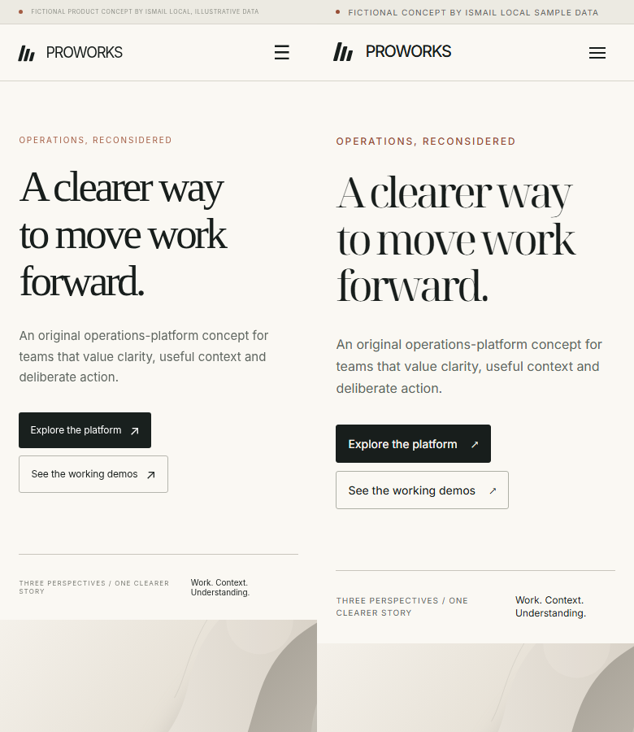
Full-page reference and actual browser (7032px high) Workflows /products/workflows/ desktop — reference / browser (1440 × 1040 each) 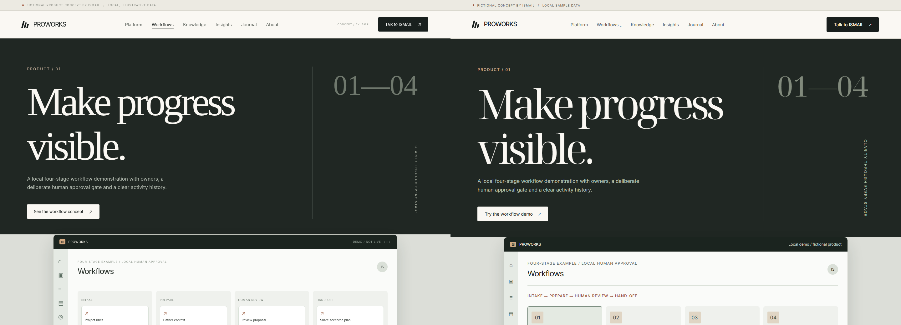
Full-page reference and actual browser (4689px high) mobile — reference / browser (390 × 900 each) 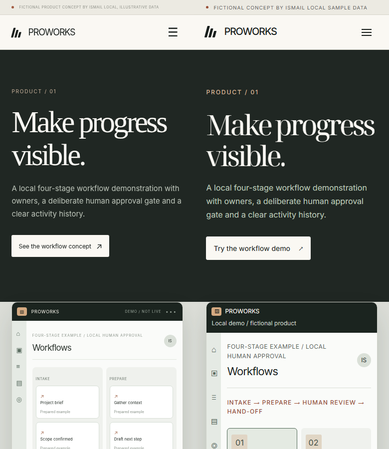
Full-page reference and actual browser (6608px high) Knowledge /products/knowledge/ desktop — reference / browser (1440 × 1040 each) 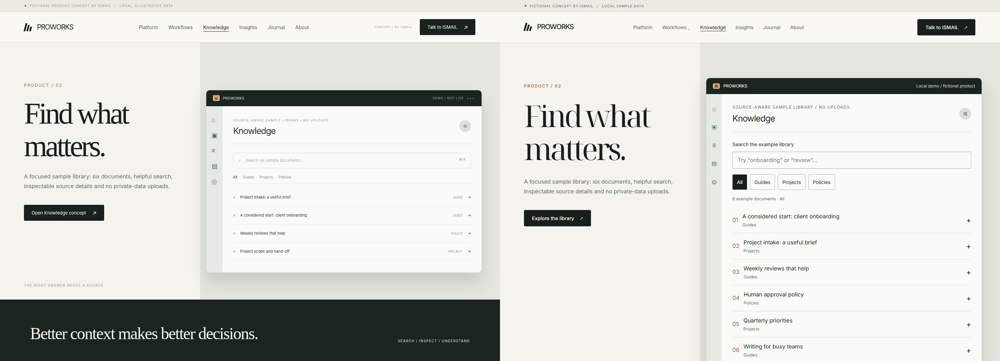
Full-page reference and actual browser (4381px high) mobile — reference / browser (390 × 900 each) 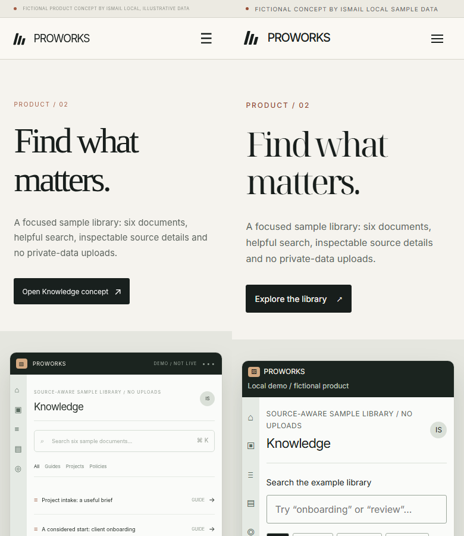
Full-page reference and actual browser (6221px high) Insights /products/insights/ desktop — reference / browser (1440 × 1040 each) 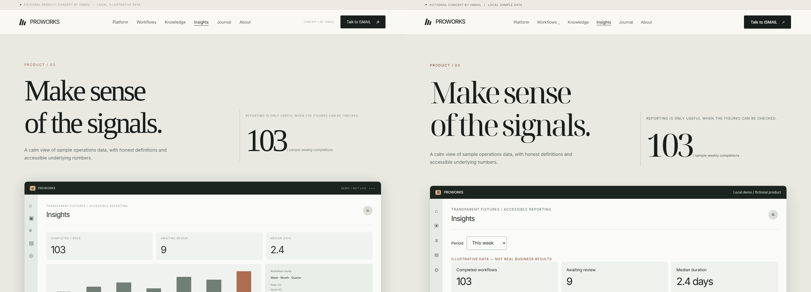
Full-page reference and actual browser (4607px high) mobile — reference / browser (390 × 900 each) 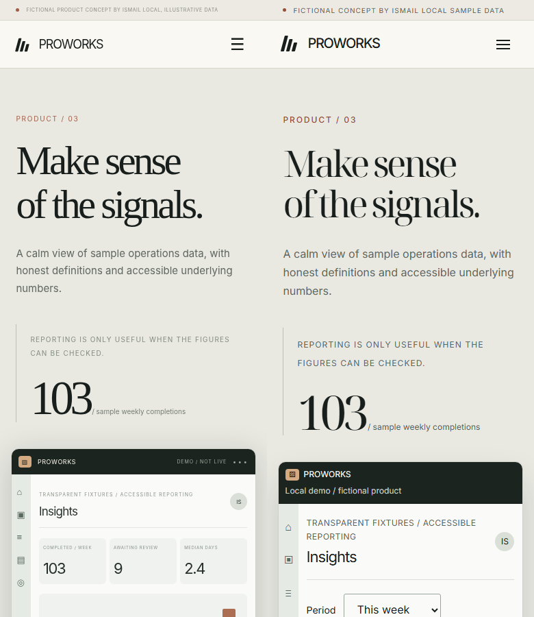
Full-page reference and actual browser (6150px high) Technology /technology/ desktop — reference / browser (1440 × 1040 each) 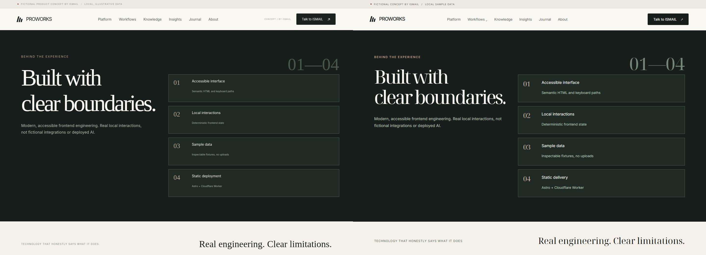
Full-page reference and actual browser (4231px high) mobile — reference / browser (390 × 900 each) 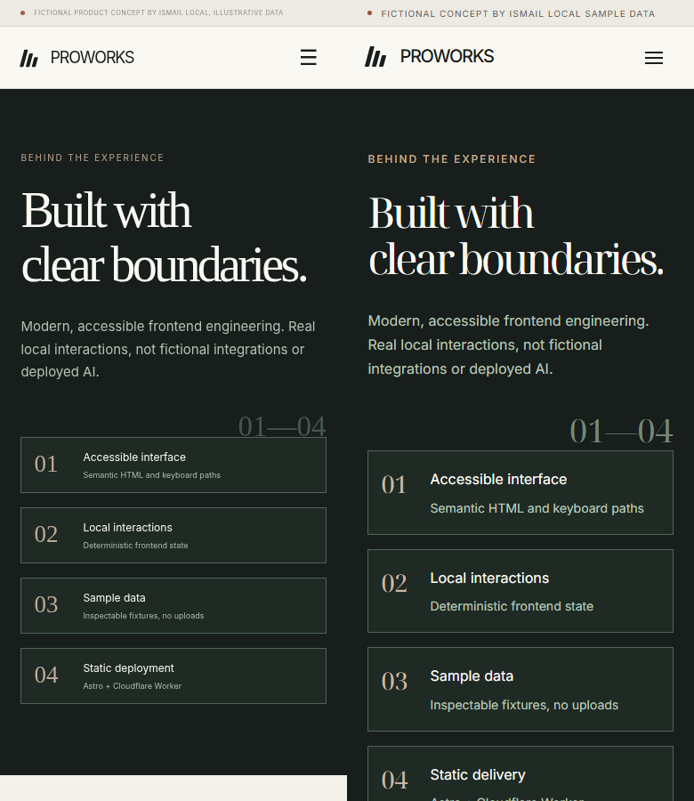
Full-page reference and actual browser (6127px high) Experience /experience/ desktop — reference / browser (1440 × 1040 each) 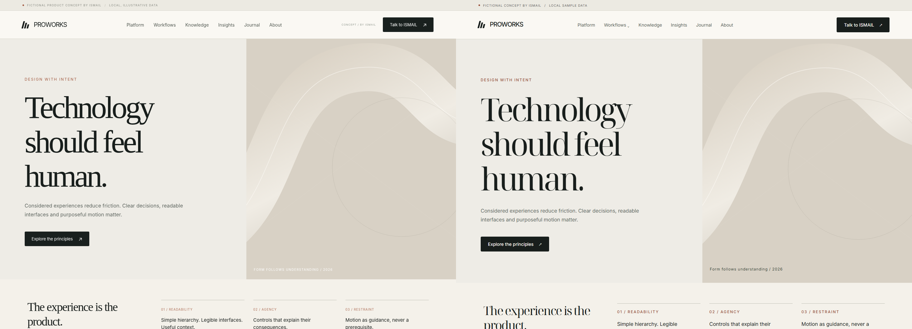
Full-page reference and actual browser (3614px high) mobile — reference / browser (390 × 900 each) 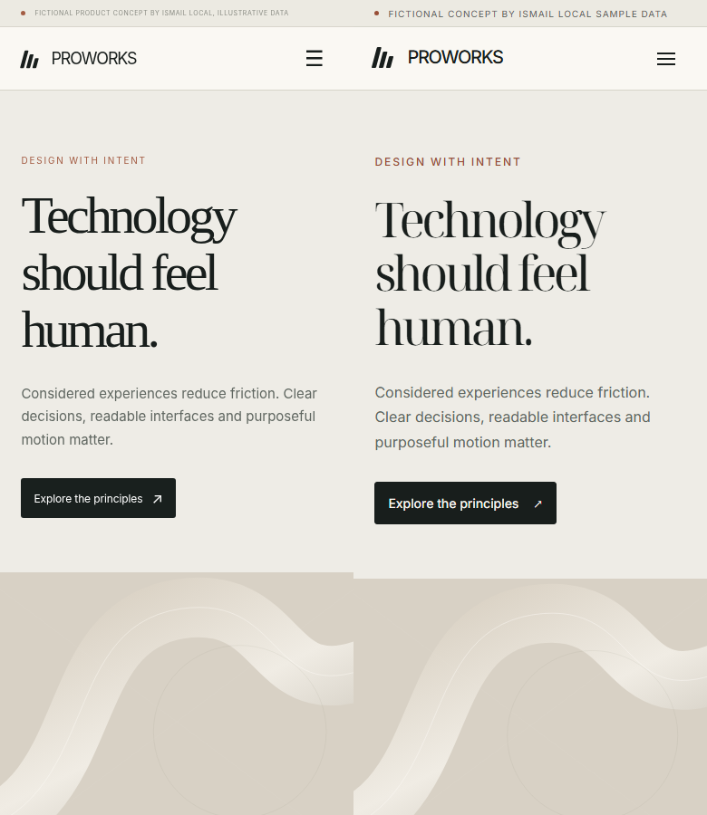
Full-page reference and actual browser (6034px high) Compare /compare/ desktop — reference / browser (1440 × 1040 each) 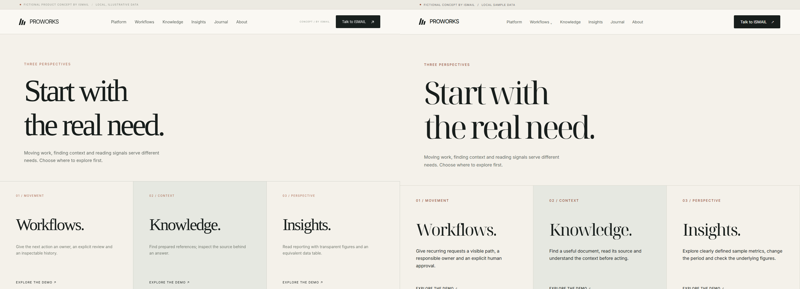
Full-page reference and actual browser (4739px high) mobile — reference / browser (390 × 900 each) 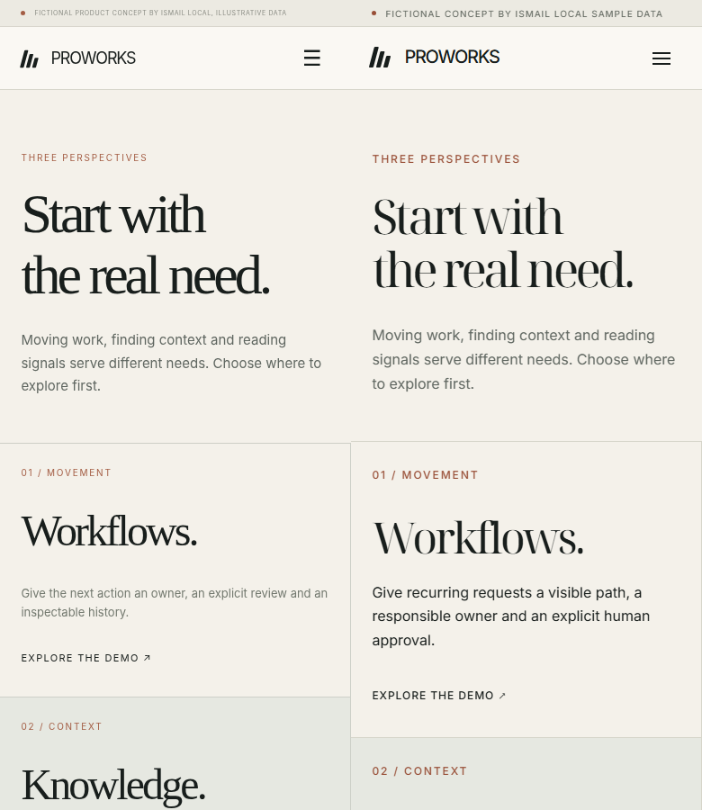
Full-page reference and actual browser (6849px high) About /about/ desktop — reference / browser (1440 × 1040 each) 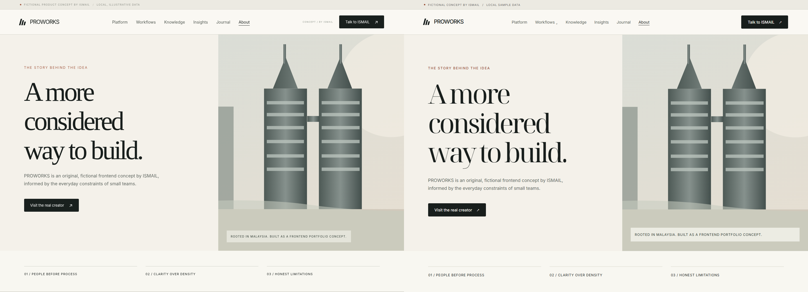
Full-page reference and actual browser (4145px high) mobile — reference / browser (390 × 900 each) Full-page reference and actual browser (6067px high) Journal /journal/ desktop — reference / browser (1440 × 1040 each) Full-page reference and actual browser (3741px high) mobile — reference / browser (390 × 900 each) Full-page reference and actual browser (5983px high) Guides /guides/ desktop — reference / browser (1440 × 1040 each) Full-page reference and actual browser (4186px high) mobile — reference / browser (390 × 900 each) Full-page reference and actual browser (5466px high) Actual interaction states insights-month.png insights-quarter.png insights-week.png keyboard-focus.png knowledge-filtered.png knowledge-initial.png knowledge-no-matches.png knowledge-reset.png knowledge-source-open.png mobile-navigation.png reduced-motion.png workflows-approved.png workflows-complete-history.png workflows-intake.png workflows-prepare.png workflows-reset.png workflows-review-confirmed.png workflows-review-waiting.png